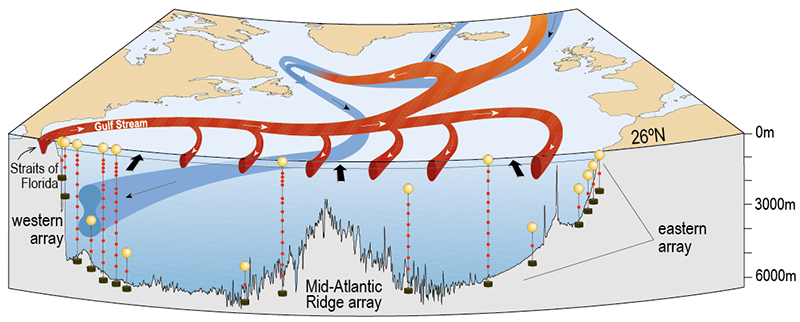
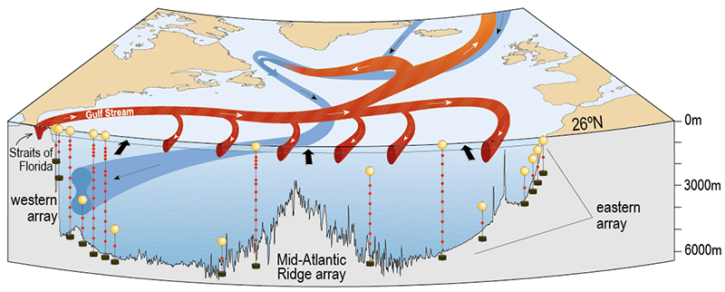

Simplifying the Dynamics of the Atlantic Meridional Overturning Circulation at 26°N
Emma Worthington
Gerard McCarthy, Robert Marsh, Jenny Mecking, Sybren Drijfhout
Outline
- What is the Atlantic Meridional Overturning Circulation?
- Why do we want to simplify it?
- How the dynamics are simplified
- What's next
(Srokosz and Bryden, Science, 2015)
Before 2004, measurements were taken by research ships crossing the Atlantic
RRS Discovery II leaving Woods Hole Oceanographic Institute in 1957

(Data from Bryden et al., (2005))
Climate simulations show that the AMOC is very likely to slow down by the end of this century
(Intergovernmental Panel on Climate Change (IPCC), 5th Annual Report, 2013)
So what?

Northern Hemisphere freezes over in days!

Sea level rises 25 m!

Climate model shows NH air temperatures cool by up to 8°C
(Jackson et al., 2009)

Sea level rose by 128 mm during a 30% AMOC downturn
(Goddard et al., 2015)
 

(from www.rapid.ac.uk)
Instruments on the moorings measure temperature, salinity, pressure and current velocity - twice a day
Data is collected by a research ship every 18 months


(Photos: Ben Moat, NOC)
What have RAPID results shown?
(Data from Bryden et al., (2005))

(Data from www.rapid.ac.uk)

(Smeed et al., 2018)
- 2004 - 2008: 18.8 Sv
- 2008 - 2012: 15.9 Sv
- 2012 - 2017: 16.3 Sv
Reduced LNADW
(3000 to 5000 m)
2008 – 2017 is 30% less than 2004 - 2008
Detecting long-term change in the AMOC

(Baehr et al., 2008)
Using the AMOC time series alone means a change takes 40-60 years to detect
Reduce variability by combining AMOC with a less noisy climate signal

Using deep cross-basin density difference reduces the detection time to 30 years.
(Baehr et al., 2007)
Variability due to mesoscale (~100 km, 1 month) eddies is suppressed close to steep continental slopes, e.g., off the Bahamas


AMOC noise is suppressed slightly by using measurements closer to the boundary

Identifying where variability is lowest may allow us to say more about historical 'snapshot' data, i.e., increase the length of the timeseries.
Summary
- A slowdown will impact climate in Ireland, UK and further afield
- Detecting slowdown using the AMOC itself may need a timeseries 60+ years long
- Using climate signals with low variability may reduce detection time by half
- e.g., deep density measured close to steep continental slopes
Thank you!
Any questions?

Emma.Worthington@soton.ac.uk
@E_L_Worthington

@emma_at_sea
If you were wondering how a 5 km long mooring is deployed from a ship...